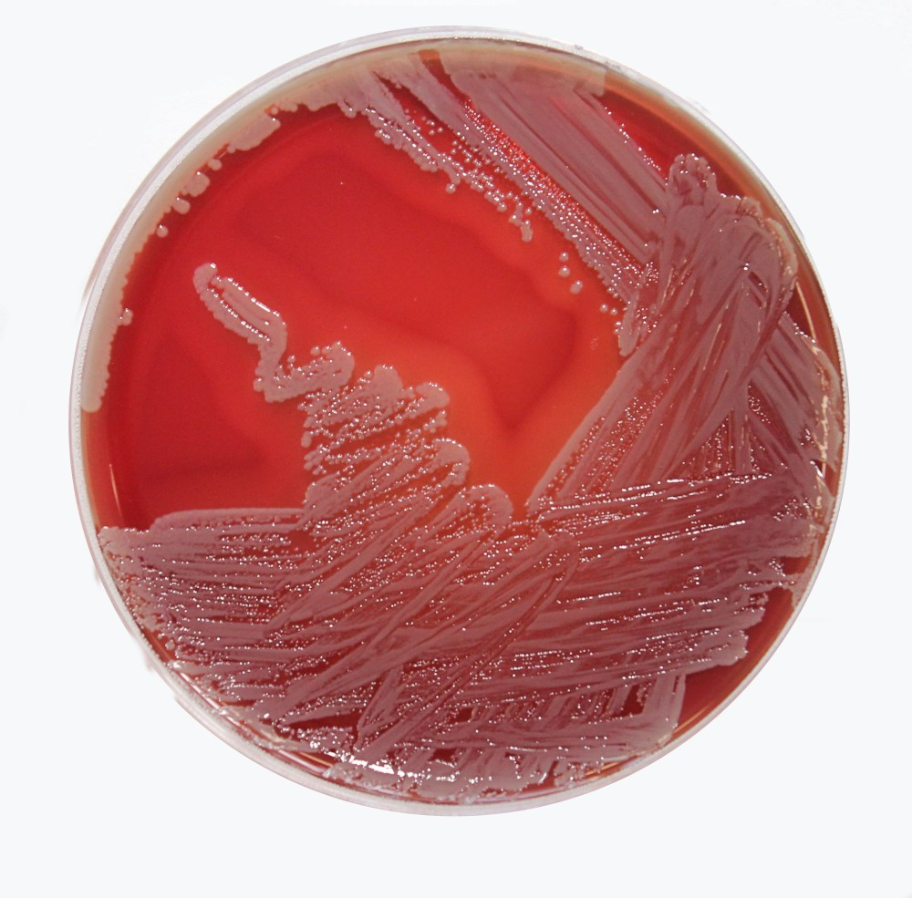

2 Bovine Mastitis
Bovine mastitis is an inflammatory disease of the udder in cows, caused by a range of microorganisms. Here are some common agents causing bovine mastitis:
- Bacteria: The most common cause of bovine mastitis is bacterial infection. Bacteria such as Staphylococcus aureus, Streptococcus agalactiae, Streptococcus uberis, and Escherichia coli are commonly found in cases of mastitis.

Fungi: Fungal infections, such as those caused by Candida albicans, can also lead to bovine mastitis.
Viruses: Although less common, viruses such as Bovine herpesvirus 1 and Bovine viral diarrhea virus can cause mastitis in cows.
Mycoplasma: Mycoplasma bovis is a bacterium that can cause chronic mastitis in cows. This bacterium is particularly difficult to treat and can lead to significant economic losses in the dairy industry.
Protozoa: Protozoan infections, such as those caused by Trichomonas foetus, can also cause mastitis in cows.
Environmental factors: In addition to infectious agents, environmental factors such as poor sanitation, overcrowding, and inadequate ventilation can also increase the risk of mastitis in cows.
It is important to identify the causative agent of mastitis in order to determine the appropriate treatment and prevent the spread of infection. Treatment often involves the use of antibiotics, but prevention strategies such as good hygiene practices and proper herd management are also important for reducing the incidence of mastitis.